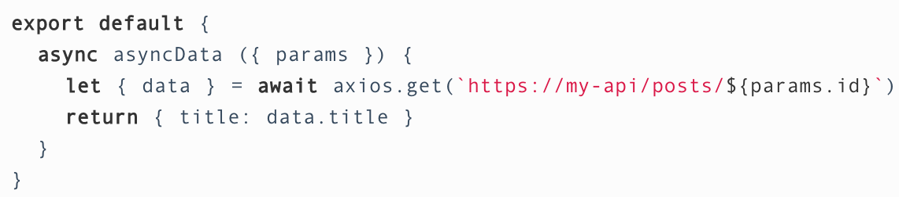

<html><head><meta charset='utf-8'><meta name='viewport' content='width=device-width, initial-scale=1'>
<meta name='applicable-device' content='pc'><meta name='keywords' content='电脑,电脑讲解,电脑技术,编程,电脑故障维修Nuxt项目搭建到发布部署' />
<script src='../../highlight/highlight.pack.js'></script>
<link rel='stylesheet' type='text/css' href='../../highlight/styles/monokai.css'/>

<link rel='stylesheet' href='../../fenxiang/dist/css/share.min.css'>
<script src='../../fenxiang/src/js/social-share.js'></script>
<script src='../../fenxiang/src/js/qrcode.js'></script>

</head><body><script>hljs.initHighlightingOnLoad();</script><script>
var system ={};  
var p = navigator.platform;       
system.win = p.indexOf('Win') == 0;  
system.mac = p.indexOf('Mac') == 0;  
system.x11 = (p == 'X11') || (p.indexOf('Linux') == 0);     
if(system.win||system.mac||system.xll){
document.write("<link href='../css/3.css' rel='stylesheet' type='text/css'>");}else{ document.write("<link href='../css/3wap.css' rel='stylesheet' type='text/css'>");}</script><script src='../../js/3.js'></script><div class='div2'><div class='heading_nav'><ul><div><li><a href='../../index.html'>首页</a></li>
</div><div onclick='hidden1()' >分享</div>
</ul></div></div>
<div id='heading_nav2'> 
<li class='row' >
<div class='social-share' data-mode='prepend'><a href='javascript:' class='social-share-icon icon-heart'></a></div></li></div><script charset='utf-8' src='../../3/js/hengfu.js'></script><script charset='utf-8' src='../../3/js/hengfu2.js'></script><hr><div class='div1'><div class='biaoti'><center>Nuxt项目搭建到发布部署</center></div><div class='banquan'>原文出处:本文由博客园博主小老虎网络提供。<br/>
原文连接:https://www.cnblogs.com/waitingbar/p/11272059.html</div><br>
    <p><strong>一、项目目录结构：</strong></p>
<p>方式1、直接利用官方提供好的脚手架工具进行搭建：npx create-nuxt-app &lt;项目名&gt;</p>
<p>目录会是这样(具体目录都放些什么，请看官方文档，详细)：</p>
<p></p>
<p>&nbsp;</p>
<p>方式2、手工慢慢来，请看官方文档：<a href="https://zh.nuxtjs.org/guide/installation#%E4%BB%8E%E5%A4%B4%E5%BC%80%E5%A7%8B%E6%96%B0%E5%BB%BA%E9%A1%B9%E7%9B%AE" target="_bank">https://zh.nuxtjs.org/guide/installation#%E4%BB%8E%E5%A4%B4%E5%BC%80%E5%A7%8B%E6%96%B0%E5%BB%BA%E9%A1%B9%E7%9B%AE</a></p>
<p>&nbsp;</p>
<p><strong>二、为项目添加sass样式表：</strong></p>
<p>步骤1：命令：npm install --save-dev node-sass sass-loader</p>
<p>步骤2：在根目录的配置文件nuxt.config.js中进行引入你需要添加的全局样式表，如：</p>
<p></p>
<p>注：如果你需要在.vue文件内进行使用，需要在style标签中添加 lang="scss" 如：</p>
<p></p>
<p>&nbsp;</p>
<p><strong>三、发起请求时需要使用 axios时，假如你没有安装过相关的依赖，那么：</strong></p>
<p>方式1：命令：npm install --save-dev axios&nbsp;</p>
<p>然后在哪个页面有需要时直接引用&nbsp;import&nbsp;axios from 'axios'</p>
<p>方式2：命令：npm install --save-dev&nbsp;@nuxtjs/axios</p>
<p>（1）、进行全局配置，在nuxt.config.js中添加模块 '@nuxtjs/axios' 如：</p>
<p></p>
<p>（2）、简单使用如（具体可以参照站点：<a href="https://zh.nuxtjs.org/guide/async-data" target="_bank">https://zh.nuxtjs.org/guide/async-data</a>）：</p>
<p></p>
<p>注：假如你想需要在一个地方进行统一设置接口请求的API,需要通过注册拦截器和更改全局配置的话，你还可以这样：</p>
<p>（可以参考文档：<a href="https://axios.nuxtjs.org/" target="_bank">https://axios.nuxtjs.org/</a>)</p>
<p>1、你需要先在 plugins 目录下添加一个文件 axios.js，如：</p>
<p></p>
<p>&nbsp;</p>
<p>&nbsp;</p>
<p>2、引用使用，在nuxt.config.js中的plugins添加 '@/plugins/axios.js'，如：</p>
<p></p>
<p>3、想要生效看到效果是吧？请重新启动服务，命令：npm run dev</p>
<p>&nbsp;</p>
<p><strong>四、动态路由</strong></p>
<p>1、假如你希望你的站点链接对SEO更加友好点（请求详情的id不以问号的展示形式来连接），比如由 http........./product/details?id=xxxx 变为&nbsp;http........./product/xxxx。那么，你可以这样玩：</p>
<p>(1)、目录结构如（注意是 _id.vue）：</p>
<p></p>
<p><span style="color: #000000;">Nuxt.js会把目录生成的路由表，如：</span></p>
<p>{ <span>name: <span>'product-id', <span>path: <span>'/product/:id?', <span>component: <span>'pages/product/_id.vue' }</span></span></span></span></span></span></p>
<p><span><span><span><span><span><span>当然，如果你觉得这样的表述不够清晰，请稳步这里：<a href="https://zh.nuxtjs.org/guide/routing#%E5%8A%A8%E6%80%81%E8%B7%AF%E7%94%B1" target="_bank"><span>https://zh.nuxtjs.org/guide/routing#%E5%8A%A8%E6%80%81%E8%B7%AF%E7%94%B1</span></a></span></span></span></span></span></span></p>
<p>&nbsp;</p>
<p><span><span><span><span><span><span>(2)、目录结构好了，那么在实际的页面跳转中，该怎样把id传过去呢？path还好理解，特别是当你用到name(推荐方式)进行处理时，请看以下写法:</span></span></span></span></span></span></p>
<p><span><span><span><span><span><span>1)、方式1 (path): &lt;nuxt-link :to="'/product/' + 这里传入你的id"&gt;点击进入详情&lt;/nuxt-link&gt;, </span></span></span></span></span></span></p>
<p><span><span><span><span><span><span>比如item对象里有个id：&lt;nuxt-link&nbsp;:to="'/product/' + item.id"&gt;点击进入详情&lt;/nuxt-link&gt;</span></span></span></span></span></span></p>
<p><span>2)、方式2 (name): &lt;nuxt-link :to="{name: 'product-id', params: {id: 这里传入你的id}}"&gt;点击进入详情&lt;/nuxt-link&gt;,</span></p>
<p><span>&nbsp;同上，比如item对象里有个id：&lt;nuxt-link&nbsp;:to="{name: 'product-id', params: {id:&nbsp;item.id}}"&gt;点击进入详情&lt;/nuxt-link&gt;</span></p>
<p><strong>注：</strong>特别的，方式2时，传递id时请用<span style="color: #800000;">params</span>，要不然它自动识别不到。当然，如果你还有其它的参数要传的话，可以在params下的对象里书写，当然也可以再多跟一个query的字段来把参数带过去，如：</p>
<p>&nbsp;&lt;nuxt-link&nbsp;:to="{name: 'product-id', params: {id:&nbsp;item.id}, query: {xxx:&nbsp;xxxx}}"&gt;点击进入详情&lt;/nuxt-link&gt;</p>
<p>&nbsp;</p>
<p><strong>&nbsp;五、服务端渲染应用部署</strong></p>
<p>1、需要发布的文件准备</p>
<p>（1）、先进行代码构建打包，命令：npm run build&nbsp;</p>
<p>　　注：</p>
<p>　　　　1）、生成的包将会在 .nuxt 这个目录下</p>
<p>　　　　2）、因.nuxt这个目录在mac下是隐藏着的，所以（非Mac时可以忽略以下几点）</p>
<p>　　　　3）、需要显示用命令：defaults write com.apple.finder AppleShowAllFiles -bool true</p>
<p>　　　　4）、当执行了以上显示的后，接下来还需要操作重启下&ldquo;访达&rdquo;，&nbsp;&nbsp;点击后弹出的框 进行退出"访达"（会自己重启）</p>
<p>　　　　5）、这下就可以看到隐藏的文件了，</p>
<p>　　　　6）、需要对文件可以再隐藏时，执行defaults write com.apple.finder AppleShowAllFiles -bool false , 再执行下第4步即可 (命令在显示的区别就是后面的 true 与 false)</p>
<p>&nbsp;</p>
<p>2、需要放置到服务器上的代码只需要4个目录：.nuxt、static、nuxt.config.js、package.json以下图：</p>
<p></p>
<p>注：目录1（.nuxt）、这是打包构建好的所有依赖文件及源文件等等</p>
<p>　　目录2（static）、就是静态资源包，因为上面打包构建时，不会被打进去的，所以得带上它</p>
<p>　　目录3（nuxt.config.js）、一些配置文件，得带上。</p>
<p>　　目录4（package.json）、这就比较重要了,当"start": "cross-env NODE_ENV=production node server/index.js",时需要把它更改为："start": "nuxt start"&nbsp;。</p>
<p>3、那么，现在把所需要的代码都准备好了后，那么接下来，把相关目录文件上传到你的域名所指向的根目录。</p>
<p>4、接下来得修改下服务端的配置文件，添加路径转发（proxy_pass）处理，因默认在本地运行时，都是访问&nbsp;http://localhost:3000 ，我用的是nginx.配置如：</p>
<p>server {<br />        　　listen       80;<br />        　　server_name  demo.htmlx.club;<br />	　　location / {<br />                　　　　proxy_pass http://localhost:3010;<br />		　　　　index index.html index.htm;<br />        　　}</p>
<p>}</p>
<p>注：配置完后需要对nginx进行重启，比如我的&nbsp;&nbsp;cd /usr/local/nginx/sbin 到达sbin 下&nbsp;判断是否配置正确: ./nginx -t&nbsp; ， 提示成功后就进行执行重启操作：./nginx -s reload</p>
<p>5、最后，切换到域名所指向的根目录下，先可以npm i （安装项目所需要的所有依赖）.</p>
<p>6、好了，感觉快好了，运行 npm run start 跑起来吧。</p>
<p>7、如果没有意外，运行了npm run start 后&nbsp; 再访问下你指定的域名，那是可以看到效果的了(右键查看源文件，可以看到渲染出数据了).</p>
<p>8、那么当你把刚才执行运行 npm run start 的命令框关闭时，再看下你的域名是还能正常访问？估计是挂了吧？没事，我们有的是解决办法，请继续往下走。。。</p>
<p>&nbsp;</p>
<p><strong>六、安装pm2</strong></p>
<p>1、全局安装命令 npm i pm2 -g&nbsp;</p>
<p>2、安装完pm2后，那么就直接跑咯，命令：pm2 start npm -- run start （执行了这命令后就不用单独执行npm run start了哦），这里域名理论是能正常访问了，接下来，这服务就会一直在跑了，除非：你执行了pm2 stop （后面可以接相关参数的）停止了它。</p>
<p>3、当然了当你想查看下pm2所守护的进程有什么的话你可以用 pm2 list&nbsp; , 又或者你想重新发布了项目后需要再重启一把，那你可以用 pm2 restart&nbsp;&nbsp;</p>
<p>注：如果同一个服务器需要起多个pm2进程的话，可以以设置环境变量的形式。如：PM2_HOME=&ldquo;xxx&rdquo; pm2 start ........&nbsp; &nbsp;<a href="https://pm2.keymetrics.io/docs/usage/specifics/" target="_blank">https://pm2.keymetrics.io/docs/usage/specifics/</a></p>
<p>&nbsp;</p>
<p><strong>七、静态应用部署</strong></p>
<p>1、当你的站是比较简单的，对SEO也有些少要求的，那么我建议你用静态应用部署。</p>
<p>2、这部署比较简单明了，就官网所说的&nbsp;npm run generate，把生成的dist目录下的文件一把丢到服务器所指定域名的根目录下即可，啥事都没了。。</p>
<p>&nbsp;</p>
<p>&nbsp;</p>
<p>&nbsp;</p>
<p>&nbsp;好咯，就这么多先，有想法的可以一起评论来研究下哦~</p>
<p>&nbsp;</p>
</div>
</div><hr><script charset='utf-8' src='../../js/sming.js'></script></body></html>